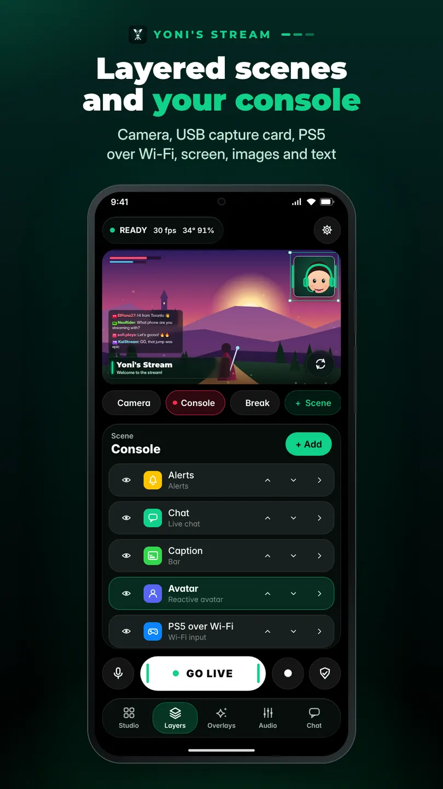

Yoni's StreamYoni's Stream, Android telefonunu eksiksiz bir yayın stüdyosuna çevirir: sahneler, katmanlar, ses mikseri, bildirimler (alert) ve multistream, bilgisayar gerekmeden.
Kaydır ve canlıya geç
CEBİNDE BİR STÜDYOCANLI OVERLAY'LERMULTISTREAM VE KAYITPROFESYONEL SESKONSOLLAR, YAKALAMA KARTLARI VE KAMERALARAKILLI ASİSTANCEBİNDE BİR STÜDYOCANLI OVERLAY'LERMULTISTREAM VE KAYITPROFESYONEL SESKONSOLLAR, YAKALAMA KARTLARI VE KAMERALARAKILLI ASİSTAN
CEBİNDE BİR STÜDYOCANLI OVERLAY'LERMULTISTREAM VE KAYITPROFESYONEL SESKONSOLLAR, YAKALAMA KARTLARI VE KAMERALARAKILLI ASİSTANCEBİNDE BİR STÜDYOCANLI OVERLAY'LERMULTISTREAM VE KAYITPROFESYONEL SESKONSOLLAR, YAKALAMA KARTLARI VE KAMERALARAKILLI ASİSTAN
Ekran görüntüleri
İçeriden bir bakış
Ekran görüntüsü dili
CEBİNDE BİR STÜDYOKatmanlı sahneler: arka ve ön kamera, telefonun ekranı ve oyunları, görseller, videolar, yazılar, tarayıcı ve sohbet.
MULTISTREAM VE KAYITRTMP, RTMPS veya SRT ile aynı anda birden fazla platformda yayın: Twitch, YouTube, Kick, TikTok LIVE, Instagram Live, Facebook, X veya kendi sunucun.
CANLI OVERLAY'LERAbonelik, bits, raid, Super Chat, üyelik, Kicks ve TikTok hediyeleri için ses ve efektli (konfeti, kalpler, havai fişek…) otomatik alert'ler.

KONSOLLAR, YAKALAMA KARTLARI VE KAMERALARYakalama kartı olmadan Wi-Fi ile PS5 ve PS4, OBS'li bir PC ya da verici olarak başka bir telefon.
PROFESYONEL SESSes/oyun dengesi, ducking, gürültü bastırma, kompresör ve çıkış limitleyici.
CANLI OVERLAY'LERTwitch, YouTube, Kick, TikTok ve Discord sohbeti yayında bir arada, sesli okuma ile.
CEBİNDE BİR STÜDYOAynı anda yatay 16:9 ve dikey 9:16 tuval; TikTok, Instagram ve YouTube Shorts için.
AKILLI ASİSTANOyununa veya etkinliğine ve bağlantına göre kalite, ses ve kamera konumu önerir.
Özellikler
Yayınının ihtiyacı olan her şey
Telefonundan, canlı overlay'lerle Twitch ve YouTube'da IRL yayın yap. Videolarını overlay'lerle bir profesyonel gibi kaydet.
01 / 06
CEBİNDE BİR STÜDYO
Katmanlı sahneler: arka ve ön kamera, telefonun ekranı ve oyunları, görseller, videolar, yazılar, tarayıcı ve sohbet.
Önizlemeli stüdyo modu ve geçişler: kesme, solma, kaydırma, taşıma ve stinger.
Aynı anda yatay 16:9 ve dikey 9:16 tuval; TikTok, Instagram ve YouTube Shorts için.
Gizlilik kalkanı: arama sırasında ya da oyundan çıktığında yayını örter.
02 / 06
CANLI OVERLAY'LER
Bantlar, alt yazılar, kayan yazılar, hedefler, geri sayımlar ve sosyal medya hesapların, 2000'den fazla yazı tipiyle.
Abonelik, bits, raid, Super Chat, üyelik, Kicks ve TikTok hediyeleri için ses ve efektli (konfeti, kalpler, havai fişek…) otomatik alert'ler.
İzleyicilerinin efekt ve ses tetiklemesi için sohbet komutları.
Twitch, YouTube, Kick, TikTok ve Discord sohbeti yayında bir arada, sesli okuma ile.
Overlay'lerini OBS ve Streamlabs'e aktar ya da kendininkileri içe aktar.
03 / 06
MULTISTREAM VE KAYIT
RTMP, RTMPS veya SRT ile aynı anda birden fazla platformda yayın: Twitch, YouTube, Kick, TikTok LIVE, Instagram Live, Facebook, X veya kendi sunucun.
Duraklatmalı 60 fps'te 4K'ya kadar kayıt ve son saniyelerden klip kaydetme.
Donanımsal H.264 ve HEVC, uyarlanabilir bitrate ve otomatik yeniden bağlanma.
Saatlerce süren yayınlar için ısı ve pil kontrolü.
0 dB−6−12−24−48
04 / 06
PROFESYONEL SES
Mikrofon, oyun ve uygulama iç sesi, müzik ve ses efektleri için mikser.
Ses/oyun dengesi, ducking, gürültü bastırma, kompresör ve çıkış limitleyici.
Hazır profiller: oyun ve ses, sohbet, podcast, arka plan müziği, ASMR ve sokakta IRL.
05 / 06
KONSOLLAR, YAKALAMA KARTLARI VE KAMERALAR
Elgato dahil USB (UVC) yakalama kartları.
Yakalama kartı olmadan Wi-Fi ile PS5 ve PS4, OBS'li bir PC ya da verici olarak başka bir telefon.
RTSP ile IP kameralar ve RTMP ile aksiyon kameraları.
USB ile Elgato Stream Deck ve ekranda kısayol düğmeleri.
1080p60 fps6.0 MbpsH.26448 kHzHEVC
06 / 06
AKILLI ASİSTAN
Oyununa veya etkinliğine ve bağlantına göre kalite, ses ve kamera konumu önerir.
Tabletinde de
Tuval, panel ve kontroller aynı anda gözünün önünde.
PLANLAR
Plansız: sahne ve overlay hazırla.
5 günlük ücretsiz deneme (yeni hesaplar): günde 2 saat, 30 fps'te 1080p'ye kadar yayın ve kayıt.
Deluxe Studio: 60 fps'te 1080p'ye kadar, günde 5 saat yayın, 3 platforma multistream ve otomatik yeniden bağlanma.
Streamer: her şey sınırsız (4K60, sınırsız sahne ve overlay, tüm platformlar, Stream Deck, yakalama kartları ve profesyonel kameralar, tüm yazı tipleri, ses profilleri, filtreler, asistan ve sohbet okuma).
Abonelikler her ay yenilenir ve Google Play'den istediğin zaman iptal edebilirsin.
GİZLİLİK
Reklam ve takip yok. Videon yalnızca seçtiğin platformlara gider; sahnelerin ve anahtarların telefonunda ve istersen kendi Google Drive'ında kalır.
Tek sinyal, beş çıkış
Beni her yerde takip et
Yayınlar, ipuçları ve Yoni's Stream haberleri. En sevdiğin ağı seç, hiçbir şeyi kaçırma.